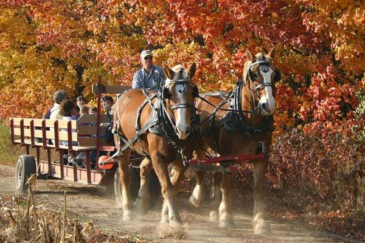

Hay Rides
What's more fun than bouncing along on a bale of hay in a wagon drawn behind two beautiful Clydesdales? Not much, which is why you should come galavanting around the country side with us on a classic hay ride. This quintessential country experience is not to be missed.
While being fun and relaxing, the hay ride is perfect to get the youngsters back in touch with nature. Step away from the hustle and bustle of the city and sit back and enjoy the fall season the way it was meant to be.